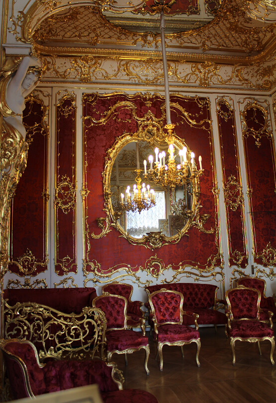
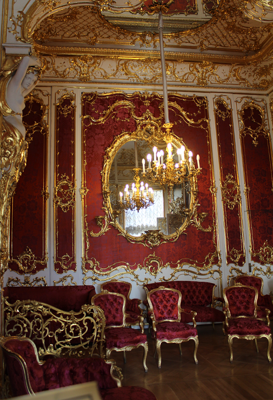
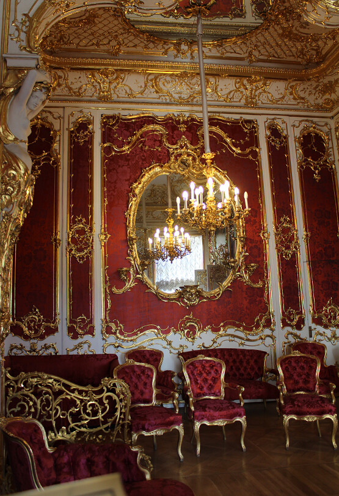
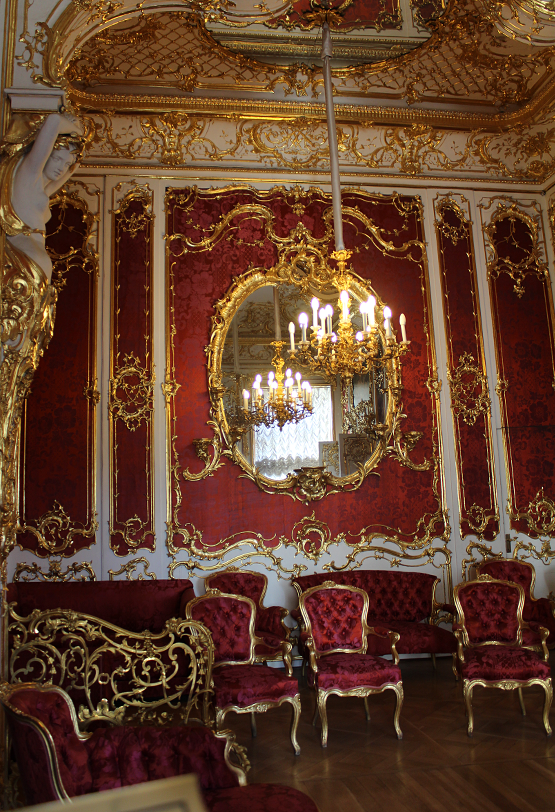

|  |  | ||
| JPEG XL, 182 kb, ssimulacra2: 87.43 | WebP, 237 kb, ssimulacra2: 78.73 | JPEG, 262 kb, ssimulacra2: 86.49 | PNG, 918 kb, ssimulacra2: 100 |
Here is an example image:
|  |  | ||
| JPEG XL, 182 kb, ssimulacra2: 87.43 | WebP, 237 kb, ssimulacra2: 78.73 | JPEG, 262 kb, ssimulacra2: 86.49 | PNG, 918 kb, ssimulacra2: 100 |
Here is an example of an image with alpha transparency:

| 
| |
| JPEG XL, 46 kb, ssimulacra2: 89.35 | WebP, 65 kb, ssimulacra2: 80.23 | PNG, 227 kb, ssimulacra2: 100 |
Here is an example of a wide-gamut image (you should see a faint Webkit logo when viewed on a P3 display):
| JPEG XL, 10 kb, ssimulacra2: 100 | JPEG, 24 kb, ssimulacra2: 84.66 | PNG, 48 kb, ssimulacra2: 100 |
Here is an example of an animation:

| |||
| JPEG XL, 341 kb | WebP, 391 kb | APNG, 991 kb | GIF, 384 kb |